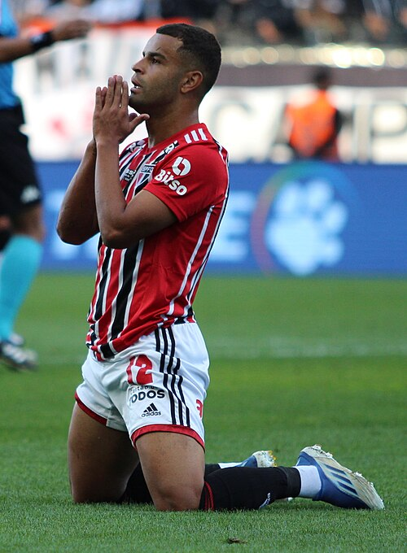

Ezzcoins › Player pages › Alisson
87
GK

Alisson
DIV85
HAN87
KIC82
REF86
SPD85
POS86
Photo (cropped): SOCCER DIGITAL · Public domain · Wikimedia Commons
Photo source
https://commons.wikimedia.org/wiki/File:Alisson_S%C3%A3o_Paulo.jpg
Licence:
Alisson
87 GK · Liverpool · Premier League ·  Brazil
Brazil
No console price yet. Cards rated 84 or higher are priced in turns through the day.
88Meta rating · GK +1 vs overall
DIV85
HAN87
KIC82
REF86
SPD85
POS86
- Position
- GK
- Club
- Liverpool
- League
- Premier League
- Nation
- Brazil
- Skill moves
- 1★
- Weak foot
- 3★
- Preferred foot
- Right
- PlayStyles+
- Rush Out+
- Full name
- Alisson Ramses Becker
Meta rating: Ezzcoins' own estimate of how well this card plays in game, worked out from its stats for each position it can play, its skill moves, weak foot and PlayStyle+. An average card scores about its overall rating; higher means it plays above its rating.
Watch on EzzcoinsMore from Liverpool
- 88
 Virgil van DijkCB
Virgil van DijkCB - 86
 Alexander IsakST
Alexander IsakST - 86
 Dominik SzoboszlaiCAM
Dominik SzoboszlaiCAM - 86
 Florian WirtzCAM
Florian WirtzCAM - 85
 Hugo EkitikéST
Hugo EkitikéST - 85Ryan GravenberchCDM
- 84
 Alexis Mac AllisterCM
Alexis Mac AllisterCM - 83
 Giorgi MamardashviliGK
Giorgi MamardashviliGK